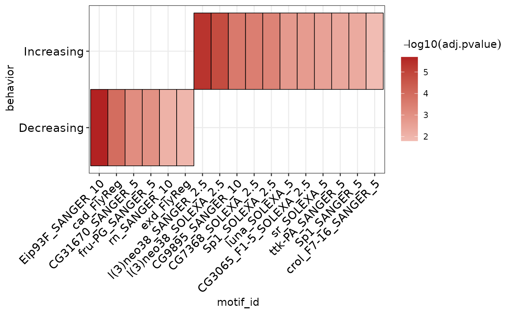
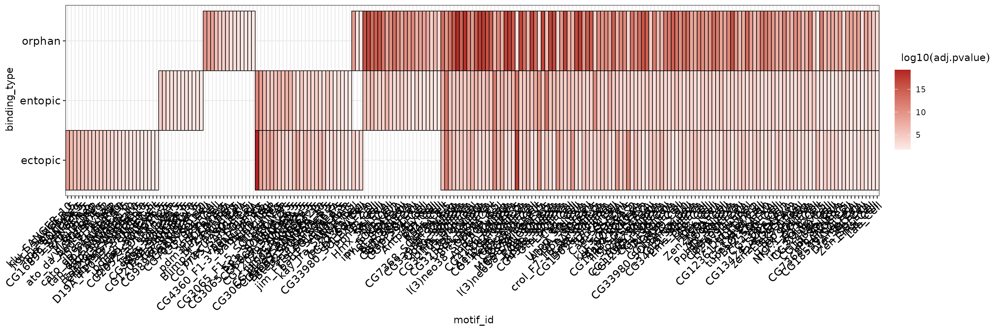
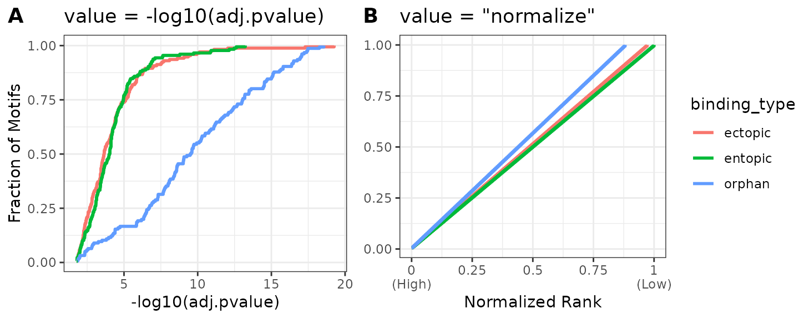
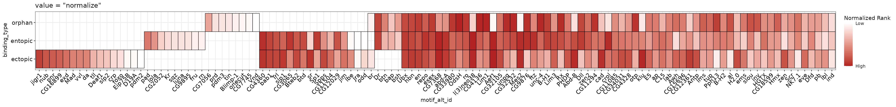
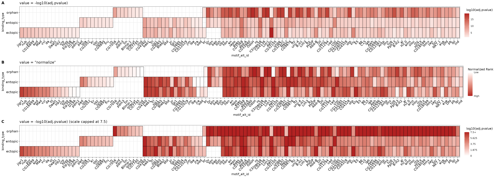

AME requires a series of input sequences to scan for motif enrichment. runAme() accepts sequence input in the following formats:
Biostrings::XStringSet objectBiostrings::XStringSet objectsNOTE XStringSet inputs can be easily generated for DNA sequences from a GRanges object using the get_sequence() function
data("example_peaks", package = "memes")
dm.genome <- BSgenome.Dmelanogaster.UCSC.dm3::BSgenome.Dmelanogaster.UCSC.dm3
sequence <- example_peaks %>%
get_sequence(dm.genome)AME scans input sequences against a database of known motifs and tests for enrichment of each motif in the database. runAme() can accept a database in the following formats:
runDreme
memes can be configured to use a default .meme format file as the query database, which it will use if the user does not provide a value to database when calling runAme(). The following locations will be searched in order.
meme_db option, defined using options(meme_db = "path/to/database.meme")
meme_db option can also be set to an R object, like a universalmotif list.MEME_DB environment variable defined in .Renviron
MEME_DB variable will only accept a path to a .meme fileNOTE: if an invalid location is found at one option, runAme() will fall back to the next location if valid (eg if the meme_db option is set to an invalid file, but the MEME_DB environment variable is a valid file, the MEME_DB path will be used.
options(meme_db = system.file("extdata/flyFactorSurvey_cleaned.meme", package = "memes", mustWork = TRUE))runAme() supports running AME using three modes:
| AME Mode | Description | Command |
|---|---|---|
| Vs Shuffled | Input vs Shuffled Sequence | runAme(input = sequence, control = "shuffle") |
| Discriminative | Input vs Control Sequence | runAme(input = sequence, control = control) |
| Partitioning | Rank Input by fasta score | runAme(input = sequence, control = NA) |
ame_vs_shuffle <- runAme(sequence)
ame_vs_control <- runAme(sequence[1:5], sequence[6:10])To run AME using partitioning mode, the fasta header must contain a score value for each entry in the form: “>entry_name score”. The get_sequences() score argument allows users to set the score value to a column value from input regions.
sequence_scored <- example_peaks %>%
plyranges::mutate(score = seq_along(.)) %>%
get_sequence(dm.genome, score = "score")
names(sequence_scored)[1]
#> [1] "chr3L:14551117-14551323 1"
ame_partition <- runAme(sequence_scored, control = NA)If using a list input to runAme(), it will dispatch multiple AME runs for each object in the list.
data("example_chip_summits", package = "memes")
seq_by_behavior <- example_chip_summits %>%
plyranges::mutate(width = 100) %>%
split(mcols(.)$e93_sensitive_behavior) %>%
get_sequence(dm.genome)
ame_by_behavior <- runAme(seq_by_behavior)If the input to runAme() is a named list of XStringSet objects, control can be set to one or more values from names(input) to use those regions as background. It will skip running those regions as the input. The following code will result in these comparisons:
ame_by_behavior_vs_static <- runAme(seq_by_behavior, control = "Static")If multiple names are used in the control section, they will be combined together to make a single control set which will be used for all comparisons. Here, we use “Static” and “Decreasing” sites as the control, which will result in only running 1 comparison: Increasing vs Static+Decreasing.
AME will return different output formats depending on the method used. For detailed information about these values see the AME Output description webpage. As a general rule of thumb, runAme() will return the same column names described in the webpage, except dashes are removed and all column names are lowercase.
ame_by_behavior_vs_static$Decreasing %>%
names
#> [1] "rank" "motif_db" "motif_id" "motif_alt_id" "consensus"
#> [6] "pvalue" "adj.pvalue" "evalue" "tests" "fasta_max"
#> [11] "pos" "neg" "pwm_min" "tp" "tp_percent"
#> [16] "fp" "fp_percent"If runAme() is run with method = "fisher", the sequences output can be added to the results by setting sequences = TRUE. This will be added as a list column named sequences that can be unnested using tidyr::unnest().
The plot_ame_heatmap() function provides a method to easily generate visualizations of AME results.
To plot results from multiple runs together, they must first be joined into 1 data frame. The ame_by_behavior_vs_static object is a list whose names correspond to the E93 response (Increasing or Decreasing). The list can be combined into a data.frame using dplyr::bind_rows. Setting .id = "behavior creates a new column behavior that contains the names from the ame_by_behavior_vs_static list. In this way, the resulting data.frame contains all AME results for each run, which can be distinguished by the behavior column.
ame_by_behavior_vs_static %>%
# AME results in list format are easily combined using dplyr::bind_rows
# .id will specify a column to hold the list object names
dplyr::bind_rows(.id = "behavior") %>%
# setting group to a column name will split the results on the y-axis
plot_ame_heatmap(group = behavior)
There are several nuances when making heatmap visualizations of these data. The following examples highlight some of these issues and provide alternative approaches and solutions.
We start by using different binding site categories as input.
seq_by_binding <- example_chip_summits %>%
plyranges::mutate(width = 100) %>%
split(mcols(.)$peak_binding_description) %>%
get_sequence(dm.genome)
ame_by_binding <- seq_by_binding %>%
runAme
ame_res <- ame_by_binding %>%
dplyr::bind_rows(.id = "binding_type")It is possible to aggregate results from multiple runs into a heatmap by setting the group parameter in plot_ame_heatmap().
This is too many hits to properly view in this vignette, but you can see that the heatmap will plot motifs by their overlap across groups, where unique motifs are on the left, and shared motifs are on the right.
ame_res %>%
plot_ame_heatmap(group = binding_type)
The dynamic range of p-values in these data varies between groups. For this reason, a simple heatmap scaled using all data values will make it more difficult to interpret within groups with a lower dynamic range of values. In other words, because the dynamic range of values are different between experiments, placing them on the default scale for comparison may not always be the most optimal visualization.
We can partially overcome this limitation by filling the heatmap with the normalized rank value for each TF, which accounts for differences in total number of discovered motifs between AME runs. Although it does not completely abrogate differences, the signal values for high-ranked motifs within groups will be more comparable. However, the normalized rank visualization eliminates all real values related to statistical significance! Instead, this visualization represents the relative ranks of hits within an AME run, which already pass a significance threshold set during runAME(). This means that even if several motifs have similar or even identical p-values, their heatmap representation will be a different color value based on their ranked order in the results list. This tends to only be useful when there are a large number of hits (>=100). Both visualizations can be useful and reveal different properties of the data to the user. If in doubt, prefer the -log10(adj.pvalue) representation.
Below is a comparison of the distribution of values when using -log10(adj.pvalue) (A) vs normalized ranks (B). Because orphan sites tend to have smaller p-values overall, the heatmap scale will be skewed towards the high values in the orphan data, making ectopic and entopic heat values lighter by comparison.
ame_res %>%
ame_compare_heatmap_methods(group = binding_type)
To use the normalized rank value, set value = "normalize" in plot_ame_heatmap().
This plot reveals that the motifs which tend to be shared across all 3 categories tend to be higher ranks in the output than the motifs unique to the different categories, which tend to come from lower ranks. This suggests that although there are differences in motif content across the three categories, they may be largely similar in motif makeup. We will investigate this question in more detail in the “Denovo motif similarity” section.
library(ggplot2)
(normalize_heatmap <- ame_res %>%
dplyr::group_by(binding_type, motif_alt_id) %>%
dplyr::filter(adj.pvalue == min(adj.pvalue)) %>%
plot_ame_heatmap(group = binding_type, id = motif_alt_id, value = "normalize") +
# All ggplot functions can be used to extend or edit the heatmap plots
ggtitle("value = \"normalize\""))
An additional third option exists to rescale the -log10(adj.pvalue) heatmap to change the heatmap’s maxiumum color value. This allows the user to maintain values which represent significance, but rescale the data to capture the lower end of the dynamic range. Using the cumulative distribution plot above, a reasonable cutoff is anywhere between 7 & 10, which captures > 90% of the data for ectopic and entopic sites.
A comparison of all three methods can be seen below.
pval_heatmap <- ame_res %>%
dplyr::group_by(binding_type, motif_alt_id) %>%
dplyr::filter(adj.pvalue == min(adj.pvalue)) %>%
plot_ame_heatmap(group = binding_type, id = motif_alt_id) +
ggtitle("value = -log10(adj.pvalue)")
scale_heatmap <- ame_res %>%
dplyr::group_by(binding_type, motif_alt_id) %>%
dplyr::filter(adj.pvalue == min(adj.pvalue)) %>%
plot_ame_heatmap(group = binding_type, id = motif_alt_id, scale_max = 7.5) +
ggtitle("value = -log10(adj.pvalue) (scale capped at 7.5)")Below is a comparison using the -log10(adj.pvalue) vs normalize methods for plotting the heatmap. Note how the different plots highlight different data properties. The -log10(adj.pvalue) plot shows overall significance of each hit, while normalize method shows the relative rank of each hit within a binding_type. Lowering the maximum scale value in C) does a better job than A) at visualizing differences in significance along the ectopic and entopic rows at the cost of decreasing the dynamic range of the orphan row. Selecting a visualization for publication will depend heavily on context, but if in doubt, prefer one which includes information of statistical significance as in A) or C).
cowplot::plot_grid(pval_heatmap,
normalize_heatmap,
scale_heatmap,
ncol = 1, labels = "AUTO")
importAme() can be used to import an ame.tsv file from a previous run on the MEME server or on the commandline. Details for how to save data from the AME webserver are below.
Optionally, if AME was run on the commandline with --method fisher, the user can pass a path to the sequences.tsv file to the sequences argument of importAme() to append the sequence information to the AME results.
To download TSV data from the MEME Server, right-click the AME TSV output link and “Save Target As” or “Save Link As” (see example image below), and save as <filename>.tsv. This file can be read using importAme().
saving AME tsv results
memes is a wrapper for a select few tools from the MEME Suite, which were developed by another group. In addition to citing memes, please cite the MEME Suite tools corresponding to the tools you use.
If you use runAme() in your analysis, please cite:
Robert McLeay and Timothy L. Bailey, “Motif Enrichment Analysis: A unified framework and method evaluation”, BMC Bioinformatics, 11:165, 2010, doi:10.1186/1471-2105-11-165. full text
The MEME Suite is free for non-profit use, but for-profit users should purchase a license. See the MEME Suite Copyright Page for details.
sessionInfo()
#> R Under development (unstable) (2021-03-18 r80099)
#> Platform: x86_64-pc-linux-gnu (64-bit)
#> Running under: Ubuntu 20.04.2 LTS
#>
#> Matrix products: default
#> BLAS/LAPACK: /usr/lib/x86_64-linux-gnu/openblas-pthread/libopenblasp-r0.3.8.so
#>
#> locale:
#> [1] LC_CTYPE=en_US.UTF-8 LC_NUMERIC=C
#> [3] LC_TIME=en_US.UTF-8 LC_COLLATE=en_US.UTF-8
#> [5] LC_MONETARY=en_US.UTF-8 LC_MESSAGES=C
#> [7] LC_PAPER=en_US.UTF-8 LC_NAME=C
#> [9] LC_ADDRESS=C LC_TELEPHONE=C
#> [11] LC_MEASUREMENT=en_US.UTF-8 LC_IDENTIFICATION=C
#>
#> attached base packages:
#> [1] parallel stats4 stats graphics grDevices utils datasets
#> [8] methods base
#>
#> other attached packages:
#> [1] ggplot2_3.3.3 magrittr_2.0.1 GenomicRanges_1.43.3
#> [4] GenomeInfoDb_1.27.8 IRanges_2.25.6 S4Vectors_0.29.11
#> [7] BiocGenerics_0.37.1 memes_0.99.6
#>
#> loaded via a namespace (and not attached):
#> [1] bitops_1.0-6 matrixStats_0.58.0
#> [3] fs_1.5.0 rprojroot_2.0.2
#> [5] tools_4.1.0 bslib_0.2.4
#> [7] utf8_1.2.1 R6_2.5.0
#> [9] colorspace_2.0-0 withr_2.4.1
#> [11] tidyselect_1.1.0 processx_3.5.0
#> [13] compiler_4.1.0 textshaping_0.3.3
#> [15] Biobase_2.51.0 desc_1.3.0
#> [17] DelayedArray_0.17.10 rtracklayer_1.51.5
#> [19] labeling_0.4.2 sass_0.3.1
#> [21] scales_1.1.1 readr_1.4.0
#> [23] pkgdown_1.6.1.9001 systemfonts_1.0.1
#> [25] stringr_1.4.0 digest_0.6.27
#> [27] Rsamtools_2.7.1 rmarkdown_2.7
#> [29] R.utils_2.10.1 XVector_0.31.1
#> [31] pkgconfig_2.0.3 htmltools_0.5.1.1
#> [33] MatrixGenerics_1.3.1 fastmap_1.1.0
#> [35] BSgenome_1.59.2 highr_0.8
#> [37] rlang_0.4.10 BSgenome.Dmelanogaster.UCSC.dm3_1.4.0
#> [39] jquerylib_0.1.3 BiocIO_1.1.2
#> [41] generics_0.1.0 farver_2.1.0
#> [43] jsonlite_1.7.2 BiocParallel_1.25.5
#> [45] dplyr_1.0.5 R.oo_1.24.0
#> [47] RCurl_1.98-1.3 GenomeInfoDbData_1.2.4
#> [49] Matrix_1.3-2 waldo_0.2.5
#> [51] munsell_0.5.0 fansi_0.4.2
#> [53] lifecycle_1.0.0 R.methodsS3_1.8.1
#> [55] stringi_1.5.3 yaml_2.2.1
#> [57] SummarizedExperiment_1.21.1 zlibbioc_1.37.0
#> [59] grid_4.1.0 ggseqlogo_0.1
#> [61] crayon_1.4.1 lattice_0.20-41
#> [63] cowplot_1.1.1 Biostrings_2.59.2
#> [65] hms_1.0.0 knitr_1.31
#> [67] ps_1.6.0 pillar_1.5.1
#> [69] rjson_0.2.20 pkgload_1.2.0
#> [71] XML_3.99-0.6 glue_1.4.2
#> [73] evaluate_0.14 vctrs_0.3.7
#> [75] testthat_3.0.2 gtable_0.3.0
#> [77] purrr_0.3.4 tidyr_1.1.3
#> [79] rematch2_2.1.2 cachem_1.0.4
#> [81] xfun_0.22 restfulr_0.0.13
#> [83] ragg_1.1.2 tibble_3.1.0
#> [85] diffobj_0.3.4 GenomicAlignments_1.27.2
#> [87] plyranges_1.11.0 memoise_2.0.0
#> [89] cmdfun_1.0.2 ellipsis_0.3.1